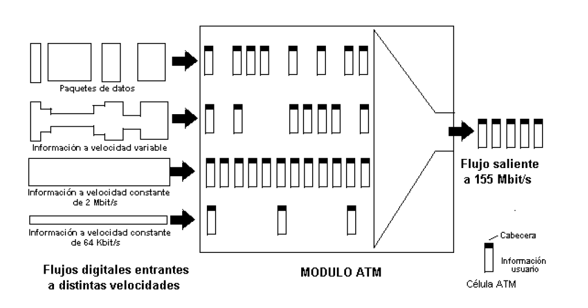
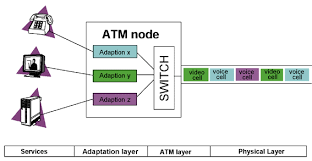

Introducción
ATM (Asynchronous Transfer Mode) es una técnica basada en celdas de tamaño fijo. Stallings la describe como una tecnología híbrida entre circuitos y paquetes.
Desarrollo
ATM utiliza celdas de 53 bytes para garantizar baja latencia y calidad de servicio. Proakis señala que esta técnica fue diseñada para soportar voz, video y datos.


Conclusión
En conclusión, ATM ofrece alta calidad de servicio, aunque su complejidad limitó su adopción masiva.